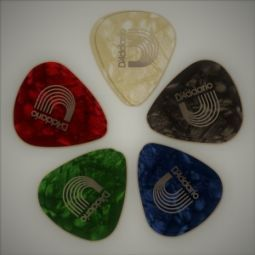

Gitar kebanyakan dipesan dan digunakan oleh para Musisi dalam membawakan musik. Ada berbagai jenis musisi. Yang paling umum adalah gitaris, pianis, pemain tiup, penari, aktor dan penyanyi opera. Sejumlah tradisi musik telah membantu membentuk karir dan seni para musisi ini. Saat ini konsep musisi juga mencakup orang-orang yang memainkan alat musik dalam pertunjukannya, misalnya pemain sulap, komedian, pelukis, paranormal dan lainnya. Jadi profesi ini juga mencakup para profesional, yang telah memantapkan diri dalam seni pertunjukan melalui bakat dan keterampilan masing-masing. Seseorang juga dapat memilih profesi ini setelah menyelesaikan pelatihan formal di salah satu disiplin ilmu yang disebutkan di atas.
 Love Guitar Production merupakan perusahaan yang didirikan untuk memproduksi gitar. Perusahaan ini dapat memproduksi gitar baik secara massal maupun pesanan custom. Gitar yang dihasilkan berkualitas, tahan lama, dan memiliki suara yang dihasilkan senar terbaik. Selain itu, untuk mendukung performa dalam bermain gitar, Love Guitar Production juga menyediakan berbagai aksesoris gitar, seperti strap, capo, pick, dan stand gitar. Untuk hasil yang maksimal, Love Guitar Production menyediakan halaman setem gitar dengan menginput guitar voice secara online, bila ingin konsultasi mengenai setem gitar yang mudah dipahami, dapat mengunjungi workshop Love Guitar Production.
Bahan yang dipilih untuk memproduksi gitar berkualitas. Kayu pilihan yang menjadi bahan utama untuk badan gitar adalah kayu East Indian (India Timur), dan Brazilian Rosewood, sedangkan untuk leher gitar lebih sering menggunakan kayu mahogani, dan untuk fret banyak menggunakan kayu ebony. Untuk membuat bagian atas badan gitar, kayu akan dipotong dengan panjang dan lebar yang sesuai, lalu dibelah dua. Setelah dipastikan ketebalannya kayu akan dilem. Setelah mengering, kayu akan mulai dibentuk menjadi gitar. Kayu akan digergaji membuat bentuk gitar, dan lubang pada tengah badan akan dibuat. Kemudian bagian sisi gitar akan mulai dibuat. Kayu dengan ketipisan yang pas akan dicelupkan air selama beberapa lama setelah itu ditekan dengan menggunakan cetakan untuk menghasilkan lekukan yang sesuai dengan badan gitar. Leher akan dipasang setelah badan gitar terbentuk dan dicek kekuatannya. Leher biasanya diisi oleh besi khusus untuk memperkuat leher gitar, dan setelah itu, fret akan dipasangkan pada leher. Leher akan langsung dipasangkan ke badan setelah fret selesai dipasang. Setelah gitar siap, gitar akan dilumuri dengan cairan khusus yang akan memperkuat ikatan lem, dan setelah mengering, gitar juga akan di coating. Proses terakhir adalah tuning, pada proses ini, gitar akan dipastikan kualitas kekuatan dan terutama suaranya sebelum dijual.